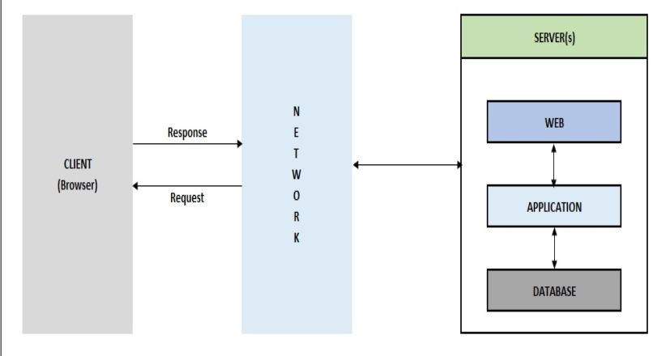
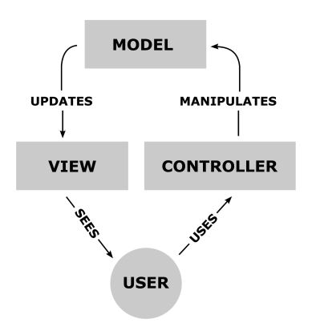
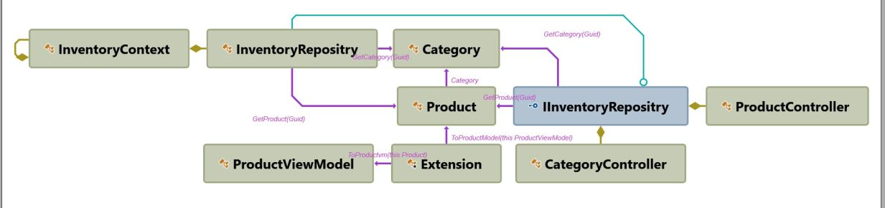
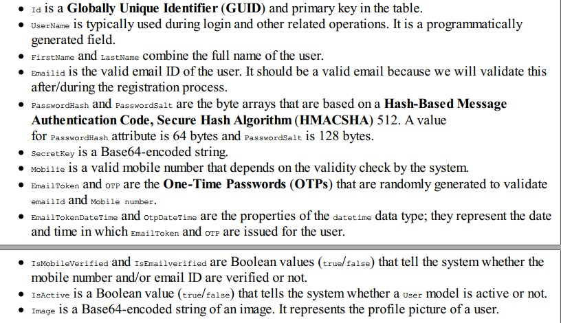
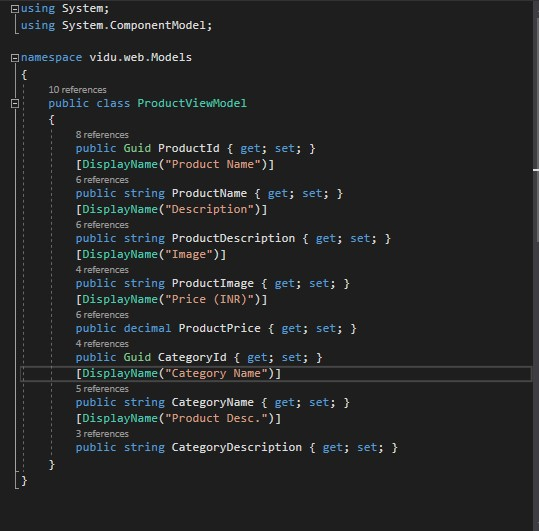

Implementing Design Patterns for Web Applications
The following topics will be covered in this chapter:
- Creating a .NET Core web application
- Crafting a web application
- Implementing CRUD pages
Creating a .Net Core web application
At the beginning of this chapter, we discussed our FlixOne console-based application, and there are various reasons to go with a web application as identified by the business team. Now it’s time to make changes in the application. In this section, we will start the creation of a new UI of our existing FlixOne application with a new look and feel. We will also discuss all the requirements and initialization.
Kicking off the project
In continuation of our existing FlixOne console application, management has decided to revamp our FlixOne Inventory console application with a lot of features. Management came to the conclusion that we have to convert our existing console application into a web-based solution.
The tech team and the business team sat down together and identified the various reasons why the decision was made to scrap the current console application:
- The interface is not interactive.
- The application is not available everywhere.
- It is complex to maintain.
- The growing business needs a scalable system with higher performance and adaptability.
Developing requirements
The following list of requirements was produced as the outcome of the discussions. The high-level requirements identified are as follows:
- Product categorization
- Product addition
- Product updating
- Product deletion The actual requirements that the business demands fall on the developers. These technical requirements include the following:
- A landing or home page: This should be a dashboard that contains various widgets, and it should show a summary of the store.
- A product page: This should have the ability to add, update, and delete products and categories.
Crafting a web application
According to the requirements just discussed, our main goal is to convert our existing console application to a web application. In the process of this conversion, we will discuss various design patterns for web applications, and the importance of these design patterns in the context of web applications.
Web applications and how they work
A web application serves requests and responses via browsers, mainly through the use of HyperText Transfer Protocol (HTTP).  The web application requires a web server (such as IIS or Apache) to manage requests coming from the client (from the browser, as can be seen in the previous diagram). An application server (such as IIS or Apache Tomcat) is also required to perform the tasks requested. A database is sometimes needed to store the information as well.
In the following sections, I will describe the working process of the web application using the Model-View-Controller (MVC) pattern. If we were to visualize the MVC model, then it would work as shown in the following diagram:  The preceding screenshot is a simple product listing, and it represents the Read section of the CRUDoperations. On this screen, the application shows the total available products and their categories. The following diagram depicts how our application interacts: 
Summary
The main goal of this chapter was to start a basic web application.
We started the chapter by discussing business requirements, why we needed a web application, and why we wanted to upgrade our console application. We then covered the step-by-step creation of a web application using Visual Studio in the MVC pattern. We also discussed how a web application can work as a client-server model, and looked at user interface patterns. We also started building CRUD pages.
In the next chapter, we will continue with the web application and discuss more design patterns for web applications.
Authentication in action
 